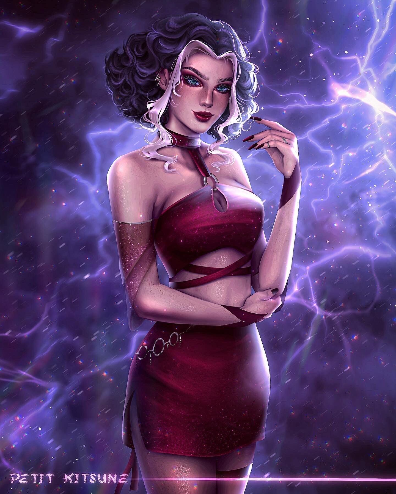
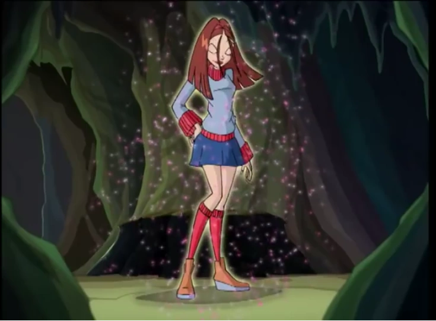
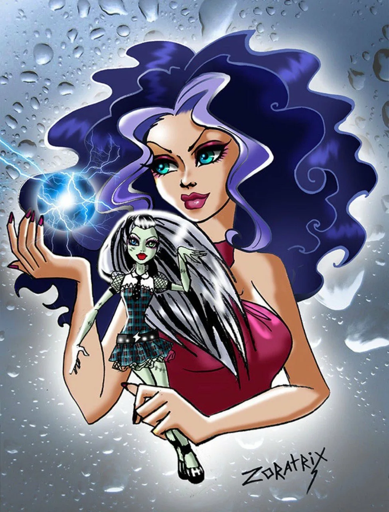
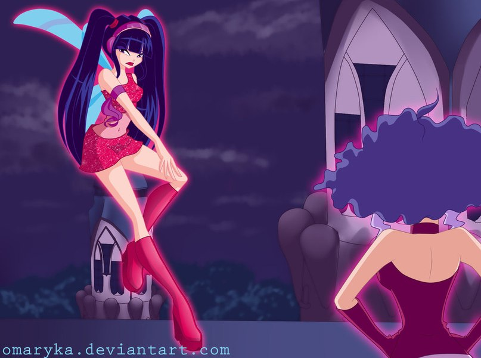
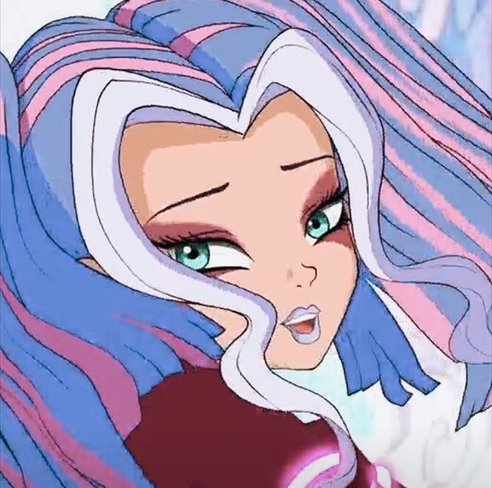

Сторми — ведьма Бури из трио Трикс, младшая сестра Айси и Дарси, наследница древней ведьмы – Тхармы, бывшая ученица Облачной Башни.
Многократно пыталась захватить Магикс вместе с сестрами. Является
злейшим врагом фей Винкс, особо ненавидит Музу. Отличается от сестёр
ярким, взрывным темпераментом.
Сторми впервые показана в виде тёмного силуэта с горящими жёлтыми глазами, сестры отчитывают Кнута, который не справился с порученной миссией забрать скипетр у Стеллы.
Сторми заступается за огра, выгораживая его перед Дарси. По ее мнению, если бы Кнут не забыл надеть свои очки, всё получилось бы.
Сторми и сёстры встречаются с Кнутом в одном из переулков Магикса, и выслушивает его доклад о местонахождении Стеллы и её подруг.
Когда Блум, которая подслушивала их разговор, оказывается застигнута врасплох и неудачно пытается атаковать Трикс, сестры решают её проучить и применяют на ней свою магию.
Сторми вызывает торнадо, который подхватывает и кружит фею.
На помощь Блум, приходят винкс, которые побеждают Кнута, но оказываются не в силах выдержать атаку ведьм и телепортируются в Алфею.

В начале сезона Сторми лишена магических сил и заточена вместе с сестрами в монастыре Светлый Камень.
Идиллическая атмосфера монастыря её раздражает.
Ей чудится видение «принца на белом единороге», который кланяется ей, от чего ведьма приходит в бешенство, после этого она срывает зло на громкоговорителе.
Она принимает план Дарси и пытается изображать примерное поведение "медитируя" в тени цветущей сакуры и сочиняя хокку, но по прежнему ощущает гнев.
Её и сестер освобождает лорд Даркар и снимает с них блокирующие магию одеяния.
Сторми атакует стражников шаровой молнией, но та оказывается бесполезной.
Даркар дарует Трикс глумиксы, и Сторми атакует повторно — конвергенцией с Айси — ледяным торнадо.
После Даркар телепортирует Трикс в свое логово.
Сторми ночью пробралась в Алфею, когда большинство Винкс были на Эраклионе.
Она сражается с Музой на крыше один на один и дает ей фору, так как не воспринимает фею всерьез.
Дождевое заклинание Сторми оказывается развеяно танцем Музы, после чего та атакует ведьму.
Сторми приземляется во двор Алфеи и готовит контратаку, но от шума в окнах загорается свет и просыпаются обитательницы школы фей.
Сторми вынуждена покинуть Алфею, но намеревается продолжить бой в другой раз.
Сторми жаждет победы над Музой.
Она меняет внешность и незаметно пробирается на концерт феи, где атакует её отца.
Сторми снова недооценивает силу музыки.
. Она насмехается над песней Музы, но к пению феи присоединяется толпа зрителей и подпитывает её энергией.
Сторми оказывается сметена со стадиона звуковой волной и проклинает Музу напоследок.
В третьем сезоне Сторми и сестер заключают в измерение Омега.
Айси освобождает её изо льда, после чего Трикс находят Валтора.
Сторми первой предлагает освободить его.
 верхняя отака